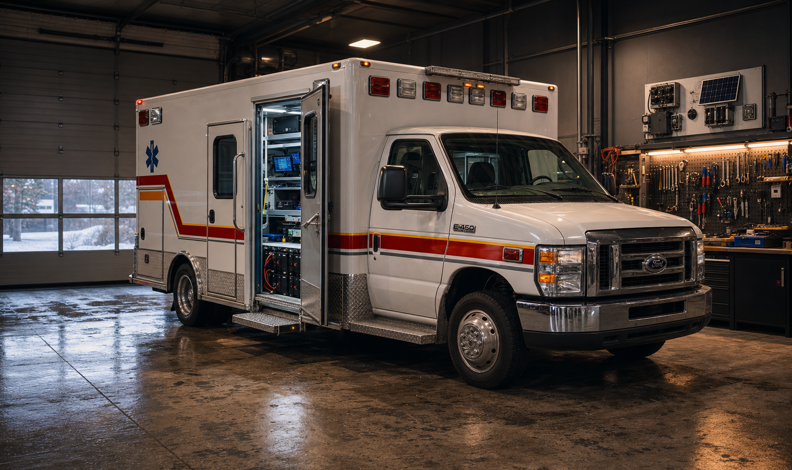

Un système cohérent
Lumières, climat, caméras, énergie, réseau et tableaux de bord deviennent une seule expérience.

Studio de systèmes intelligents
Des systèmes intelligents pour les maisons, les véhicules et les infrastructures privées. Automatisation, sécurité, réseau, intelligence locale et interfaces sur mesure réunis dans un seul environnement.
Ce que ça change
Lumières, climat, caméras, énergie, réseau et tableaux de bord deviennent une seule expérience.
Les données sensibles restent locales quand c'est possible, avec accès distant par VPN.
Documentation, tests, contrôle manuel et choix d'équipement avant la magie.
Démonstration maison
Cette démo est simulée. Elle montre comment un espace peut réagir sans exposer de vraie installation.
Trois environnements


Interface interactive
Un dashboard fictif inspiré d'un système Home Assistant, construit pour montrer les réactions visibles.
Résidence privée
Sécurité et vision
Frigate peut analyser les caméras localement. Home Assistant reçoit les événements utiles, pas chaque pixel qui bouge.
Caméras PoE vers switch local, détection Frigate, événements Home Assistant, stockage local, notifications privées et accès distant par VPN.
Projet phare - en développement
Une ambulance québécoise transformée en laboratoire intelligent mobile: showroom, studio de contenu, espace connecté, plateforme de sécurité et test de fiabilité sur la route.
Voir le projet Mobile LabAtlas de route
Floride, Colombie-Britannique, nord des États-Unis, Californie, Hawaii, Costa Rica, Caraïbes, Miami et retour YUL: la route devient une contrainte de design.
Jarvis Lab
Projet de recherche et prototype. L'objectif n'est pas de vendre une IA magique, mais d'explorer une interface locale capable d'expliquer l'état d'un système.
Choisis une question. La réponse simulée montrera comment une interface pourrait résumer un état réel sans exposer les systèmes publics.
Services
Projets pilotes, expériences sérieuses et accompagnement sur mesure.
Processus
Journal technique
Contact